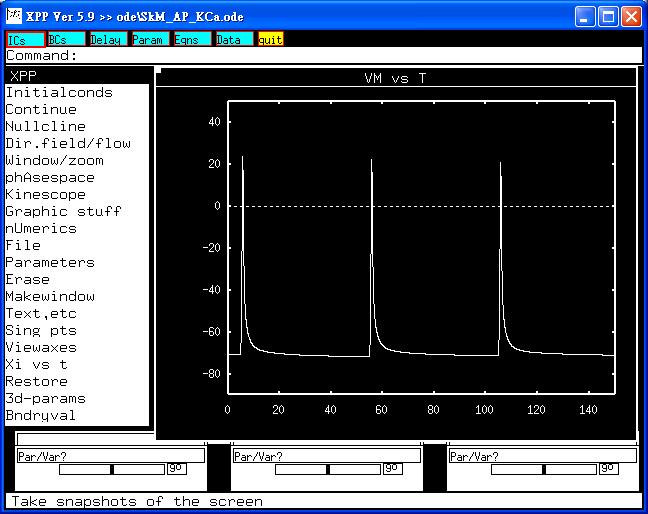

This is the readme.txt for the models associated with the paper Wang YJ, Lin MW, Lin AA, Wu SN. Riluzole-induced block of voltage-gated Na(+) current and activation of BK(Ca) channels in cultured differentiated human skeletal muscle cell. Life Sci 2007;82:11-20 Abstract: Riluzole is known to be of therapeutic use in the management of amyotrophic lateral sclerosis. In this study, we investigated the effects of riluzole on ion currents in cultured differentiated human skeletal muscle cells (dHSkMCs). Western blotting revealed the protein expression of alpha-subunits for both large-conductance Ca(2+)-activated K(+) (BK(Ca)) channel and Na(+) channel (Na(v)1.5) in these cells. Riluzole could reduce the frequency of spontaneous beating in dHSkMCs. In whole-cell configuration, riluzole suppressed voltage-gated Na(+) current (I(Na)) in a concentration-dependent manner with an IC(50) value of 2.3 muM. Riluzole (10 muM) also effectively increased Ca(2+)-activated K(+) current (I(K(Ca))) which could be reversed by iberiotoxin (200 nM) and paxilline (1 muM), but not by apamin (200 nM). In inside-out patches, when applied to the inside of the cell membrane, riluzole (10 muM) increased BK(Ca)-channel activity with a decrease in mean closed time. Simulation studies also unraveled that both decreased conductance of I(Na) and increased conductance of I(K(Ca)) utilized to mimic riluzole actions in skeletal muscle cells could combine to decrease the amplitude of action potentials and increase the repolarization of action potentials. Taken together, inhibition of I(Na) and stimulation of BK(Ca)-channel activity caused by this drug are partly, if not entirely, responsible for its muscle relaxant actions in clinical setting. -------------------------- To run the models: XPP: start with the command xpp ode\SkM_AP_K(Ca).ode Mouse click on Initialconds, and then (G)o. This makes a trace similar to fig 6A in the paper of Wang et al.  To mimic the riluzole action, changes in the parameters of gNa and gK(Ca) will make traces similar to Fig. 6B or 6C. Bard Ermentrout's website http://www.pitt.edu/~phase/ describes how to get and use xpp (Bard wrote xpp). The model file was submitted by: Dr. Sheng-Nan Wu, Ya-Jean Wang Natl Cheng Kung U Med Coll Tainan 70101, Taiwan